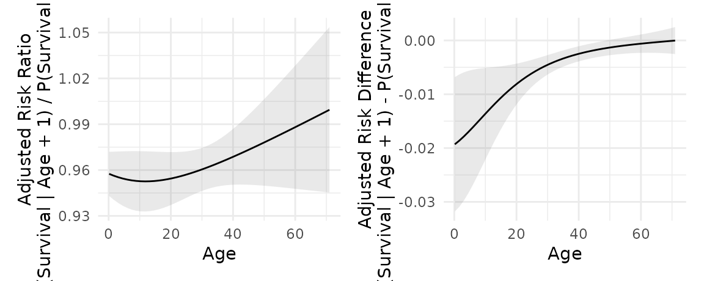
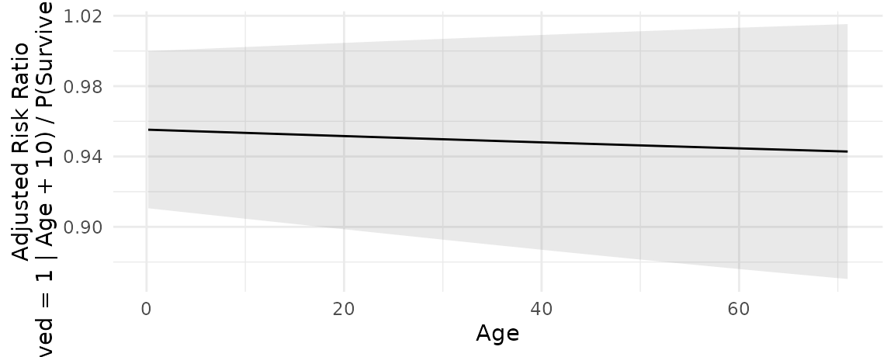

In this vignette, we introduce “comparisons”, defined as:
Compare the predictions made by a model for different regressor values (e.g., college graduates vs. others): contrasts, differences, risk ratios, odds, etc.
The comparisons() function is extremely
flexible, and it allows users to estimate a vast array of quantities of
interest. To describe those quantities, we will break the problem up in
4 steps:
- Quantity
- Grid
- Average
- Hypothesis
These steps can be combined and mixed and matched to define and compute many different estimands.
Simple example: Titanic
Consider a logistic regression model estimated using the Titanic mortality data:
library(marginaleffects)
dat <- "https://vincentarelbundock.github.io/Rdatasets/csv/Stat2Data/Titanic.csv"
dat <- read.csv(dat)
dat$PClass[dat$PClass == "*"] <- NA
mod <- glm(Survived ~ PClass * SexCode * Age, data = dat, family = binomial)Step 1: Quantity
The question that interests us is:
How does the probability of survival (outcome) change if a passenger travels in 1st class vs. 3rd class?
Since we are comparing two predicted outcomes, we will use the
comparisons(). To indicate that our focal variable is
PClass and that we are interested in the comparison between
1st and 3rd class, we will use the variables argument:
comparisons(mod,
variables = list(PClass = c("1st", "3rd"))) # Step 1: QuantityStep 2: Grid
In GLM models, most quantities of interest are conditional, in the sense that they will typically depend on the values of all the predictors in the model. Therefore, we need to decide where in the predictor space we want to evaluate the quantity of interest described above.
By default, comparisons() will compute estimates for
every row of the original dataset that was used to fit a model. There
are 1313 observations in the titanic dataset. Therefore, if we just
execute the code in the previous section, we will obtain 1313 estimates
of the difference between the probabiliyt of survival in 3rd and 1st
class:
comparisons(mod,
variables = list(PClass = c("1st", "3rd"))) # Step 1: Quantity
#>
#> Term Contrast Estimate Std. Error z Pr(>|z|) 2.5 % 97.5 %
#> PClass 3rd - 1st -0.496 0.0610 -8.13 < 0.001 -0.616 -0.376
#> PClass 3rd - 1st -0.472 0.1247 -3.79 < 0.001 -0.716 -0.228
#> PClass 3rd - 1st -0.353 0.0641 -5.51 < 0.001 -0.478 -0.227
#> PClass 3rd - 1st -0.493 0.0583 -8.45 < 0.001 -0.607 -0.379
#> PClass 3rd - 1st -0.445 0.1452 -3.07 0.00216 -0.730 -0.161
#> --- 746 rows omitted. See ?avg_comparisons and ?print.marginaleffects ---
#> PClass 3rd - 1st -0.377 0.0703 -5.36 < 0.001 -0.515 -0.239
#> PClass 3rd - 1st -0.384 0.0726 -5.30 < 0.001 -0.527 -0.242
#> PClass 3rd - 1st -0.412 0.0821 -5.02 < 0.001 -0.573 -0.251
#> PClass 3rd - 1st -0.399 0.0773 -5.16 < 0.001 -0.550 -0.247
#> PClass 3rd - 1st -0.361 0.0661 -5.47 < 0.001 -0.490 -0.232
#> Prediction type: response
#> Columns: rowid, type, term, contrast, estimate, std.error, statistic, p.value, conf.low, conf.high, predicted, predicted_hi, predicted_lo, Survived, PClass, SexCode, AgeNotice that the contrast between 3rd and 1st is different from row to row. This reflects the fact that, in our model, moving from 1st to 3rd would have a different effect on the predicted probability of survival for different individuals.
We can be more specific in our query. Instead of using the empirical
distribution as our “grid”, we can specify exactly where we want to
evaluate the comparison in the predictor space, by using the
newdata argument and the datagrid() function.
For example, say I am interested in:
The effect of moving from 1st to 3rd class on the probability of survival for a 50 year old man and a 50 year old woman.
I can type:
cmp <- comparisons(mod,
variables = list(PClass = c("1st", "3rd")), # Step 1: Quantity
newdata = datagrid(Age = 50, SexCode = 0:1)) # Step 2: Grid
cmp
#>
#> Term Contrast Estimate Std. Error z Pr(>|z|) 2.5 % 97.5 % Age SexCode
#> PClass 3rd - 1st -0.184 0.0535 -3.45 <0.001 -0.289 -0.0796 50 0
#> PClass 3rd - 1st -0.511 0.1242 -4.12 <0.001 -0.755 -0.2679 50 1
#>
#> Prediction type: response
#> Columns: rowid, type, term, contrast, estimate, std.error, statistic, p.value, conf.low, conf.high, predicted, predicted_hi, predicted_lo, Survived, PClass, Age, SexCodeWe now know that moving from 1st to 3rd changes by -0.184 the
probability of survival for 50 year old men (SexCode=0),
and by -0.511 the probability of survival for 50 year old women
(SexCode=1).
Step 3: Averaging
Again, by default comparisons() estimates quantities for
all the actually observed units in our dataset. Sometimes, it is
convenient to marginalize those conditional estimates, in order to
obtain an “average contrast”:
avg_comparisons(mod, # Step 3: Average
variables = list(PClass = c("1st", "3rd"))) # Step 1: Quantity
#>
#> Term Contrast Estimate Std. Error z Pr(>|z|) 2.5 % 97.5 %
#> PClass 3rd - 1st -0.396 0.0425 -9.3 <0.001 -0.479 -0.312
#>
#> Prediction type: response
#> Columns: type, term, contrast, estimate, std.error, statistic, p.value, conf.low, conf.highAlternatively, we could also take the average, but just of the two estimates that we computed above for the 50 year old man and 50 year old woman.
avg_comparisons(mod, # Step 3: Average
variables = list(PClass = c("1st", "3rd")), # Step 1: Quantity
newdata = datagrid(Age = 50, SexCode = 0:1)) # Step 2: Grid
#>
#> Term Contrast Estimate Std. Error z Pr(>|z|) 2.5 % 97.5 %
#> PClass 3rd - 1st -0.348 0.0676 -5.15 <0.001 -0.48 -0.215
#>
#> Prediction type: response
#> Columns: type, term, contrast, estimate, std.error, statistic, p.value, conf.low, conf.highNotice that this is exactly the same as the average in the estimates
from the previous section, which we had stored as cmp:
cmp$estimate
#> [1] -0.1844289 -0.5113098
mean(cmp$estimate)
#> [1] -0.3478694Hypothesis
Finally, imagine we are interested in this question:
Does moving from 1st to 3rd class have a bigger effect on the probability of survival for 50 year old men, or for 50 year old women?
To answer this, we use the hypothesis argument:
comparisons(mod,
variables = list(PClass = c("1st", "3rd")), # Step 1: Quantity
newdata = datagrid(Age = 50, SexCode = 0:1), # Step 2: Grid
hypothesis = "b1 = b2") # Step 4: Hypothesis
#>
#> Term Estimate Std. Error z Pr(>|z|) 2.5 % 97.5 %
#> b1=b2 0.327 0.135 2.42 0.0156 0.0618 0.592
#>
#> Prediction type: response
#> Columns: type, term, estimate, std.error, statistic, p.value, conf.low, conf.highThis result maps directly onto the estimates we had above. It is the difference in the contrast for 50-men and 50-women:
diff(cmp$estimate)
#> [1] -0.3268809This result can be interpreted as a “difference-in-differences”: Moving from 1st to 3rd has a much larger negative effect on the probability of survival for a 50 year old woman than for a 50 year old man. This difference is statistically significant.
We can do a similar comparison, but instead of fixing a conditional
grid, we can average over subgruops of the empirical distribution, using
the by argument:
avg_comparisons(mod,
variables = list(PClass = c("1st", "3rd")), # Step 1: Quantity
by = "SexCode", # Step 3: Average
hypothesis = "b1 = b2") # Step 4: Hypothesis
#>
#> Term Estimate Std. Error z Pr(>|z|) 2.5 % 97.5 %
#> b1=b2 -0.162 0.0845 -1.91 0.0558 -0.327 0.00402
#>
#> Prediction type: response
#> Columns: type, term, estimate, std.error, statistic, p.value, conf.low, conf.highManual computation
Now we show how to use the base R predict()
function to compute some of the same quantities as above. This exercise
may be clarifying for some users.
grid_50_1_3 <- data.frame(Age = 50, SexCode = 1, PClass = "3rd")
grid_50_1_1 <- data.frame(Age = 50, SexCode = 1, PClass = "1st")
grid_50_0_3 <- data.frame(Age = 50, SexCode = 0, PClass = "3rd")
grid_50_0_1 <- data.frame(Age = 50, SexCode = 0, PClass = "1st")
yhat_50_1_3 <- predict(mod, newdata = grid_50_1_3, type = "response")
yhat_50_1_1 <- predict(mod, newdata = grid_50_1_1, type = "response")
yhat_50_0_3 <- predict(mod, newdata = grid_50_0_3, type = "response")
yhat_50_0_1 <- predict(mod, newdata = grid_50_0_1, type = "response")
# prediction on a grid
predictions(mod, newdata = datagrid(Age = 50, SexCode = 1, PClass = "3rd"))
#>
#> Estimate Pr(>|z|) 2.5 % 97.5 % Age SexCode PClass
#> 0.446 0.661 0.235 0.679 50 1 3rd
#>
#> Prediction type: link
#> Columns: rowid, type, estimate, p.value, conf.low, conf.high, Survived, Age, SexCode, PClass
yhat_50_1_3
#> 1
#> 0.4463379
# contrast on a grid
comparisons(mod,
variables = list(PClass = c("1st", "3rd")),
newdata = datagrid(Age = 50, SexCode = 0:1))
#>
#> Term Contrast Estimate Std. Error z Pr(>|z|) 2.5 % 97.5 % Age SexCode
#> PClass 3rd - 1st -0.184 0.0535 -3.45 <0.001 -0.289 -0.0796 50 0
#> PClass 3rd - 1st -0.511 0.1242 -4.12 <0.001 -0.755 -0.2679 50 1
#>
#> Prediction type: response
#> Columns: rowid, type, term, contrast, estimate, std.error, statistic, p.value, conf.low, conf.high, predicted, predicted_hi, predicted_lo, Survived, PClass, Age, SexCode
yhat_50_0_3 - yhat_50_0_1
#> 1
#> -0.1844289
yhat_50_1_3 - yhat_50_1_1
#> 1
#> -0.5113098
# difference-in-differences
comparisons(mod,
variables = list(PClass = c("1st", "3rd")),
newdata = datagrid(Age = 50, SexCode = 0:1),
hypothesis = "b1 = b2")
#>
#> Term Estimate Std. Error z Pr(>|z|) 2.5 % 97.5 %
#> b1=b2 0.327 0.135 2.42 0.0156 0.0618 0.592
#>
#> Prediction type: response
#> Columns: type, term, estimate, std.error, statistic, p.value, conf.low, conf.high
(yhat_50_0_3 - yhat_50_0_1) - (yhat_50_1_3 - yhat_50_1_1)
#> 1
#> 0.3268809
# average of the empirical distribution of contrasts
avg_comparisons(mod, variables = list(PClass = c("1st", "3rd")), by = "SexCode")
#>
#> Term Contrast SexCode Estimate Std. Error z Pr(>|z|) 2.5 % 97.5 %
#> PClass mean(3rd) - mean(1st) 0 -0.334 0.0570 -5.86 <0.001 -0.446 -0.222
#> PClass mean(3rd) - mean(1st) 1 -0.496 0.0623 -7.95 <0.001 -0.618 -0.374
#>
#> Prediction type: response
#> Columns: type, term, contrast, SexCode, estimate, std.error, statistic, p.value, conf.low, conf.high, predicted, predicted_hi, predicted_lo
grid_empirical_1_3 <- dat |> subset(SexCode == 1) |> transform(PClass = "3rd")
grid_empirical_1_1 <- dat |> subset(SexCode == 1) |> transform(PClass = "1st")
grid_empirical_0_3 <- dat |> subset(SexCode == 0) |> transform(PClass = "3rd")
grid_empirical_0_1 <- dat |> subset(SexCode == 0) |> transform(PClass = "1st")
yhat_empirical_0_1 <- predict(mod, newdata = grid_empirical_0_1, type = "response")
yhat_empirical_0_3 <- predict(mod, newdata = grid_empirical_0_3, type = "response")
yhat_empirical_1_1 <- predict(mod, newdata = grid_empirical_1_1, type = "response")
yhat_empirical_1_3 <- predict(mod, newdata = grid_empirical_1_3, type = "response")
mean(yhat_empirical_0_3, na.rm = TRUE) - mean(yhat_empirical_0_1, na.rm = TRUE)
#> [1] -0.3341426
mean(yhat_empirical_1_3, na.rm = TRUE) - mean(yhat_empirical_1_1, na.rm = TRUE)
#> [1] -0.4956673Predictor types
Logical and factor predictors
Consider a simple model with a logical and a factor variable:
library(marginaleffects)
tmp <- mtcars
tmp$am <- as.logical(tmp$am)
mod <- lm(mpg ~ am + factor(cyl), tmp)The comparisons function automatically computes
contrasts for each level of the categorical variables, relative to the
baseline category (FALSE for logicals, and the reference
level for factors), while holding all other values at their observed
values. The avg_comparisons() does the same, but then
marginalizes by taking the average of unit-level estimates:
cmp <- avg_comparisons(mod)
cmp
#>
#> Term Contrast Estimate Std. Error z Pr(>|z|) 2.5 % 97.5 %
#> am TRUE - FALSE 2.56 1.30 1.97 0.0485 0.0167 5.10
#> cyl 6 - 4 -6.16 1.54 -4.01 <0.001 -9.1661 -3.15
#> cyl 8 - 4 -10.07 1.45 -6.93 <0.001 -12.9136 -7.22
#>
#> Prediction type: response
#> Columns: type, term, contrast, estimate, std.error, statistic, p.value, conf.low, conf.highThe summary printed above says that moving from the reference
category 4 to the level 6 on the
cyl factor variable is associated with a change of -6.156
in the adjusted prediction. Similarly, the contrast from
FALSE to TRUE on the am variable
is equal to 2.560.
We can obtain different contrasts by using the
comparisons() function. For example:
avg_comparisons(mod, variables = list(cyl = "sequential"))
#>
#> Term Contrast Estimate Std. Error z Pr(>|z|) 2.5 % 97.5 %
#> cyl 6 - 4 -6.16 1.54 -4.01 < 0.001 -9.17 -3.15
#> cyl 8 - 6 -3.91 1.47 -2.66 0.00781 -6.79 -1.03
#>
#> Prediction type: response
#> Columns: type, term, contrast, estimate, std.error, statistic, p.value, conf.low, conf.high
avg_comparisons(mod, variables = list(cyl = "pairwise"))
#>
#> Term Contrast Estimate Std. Error z Pr(>|z|) 2.5 % 97.5 %
#> cyl 6 - 4 -6.16 1.54 -4.01 < 0.001 -9.17 -3.15
#> cyl 8 - 4 -10.07 1.45 -6.93 < 0.001 -12.91 -7.22
#> cyl 8 - 6 -3.91 1.47 -2.66 0.00781 -6.79 -1.03
#>
#> Prediction type: response
#> Columns: type, term, contrast, estimate, std.error, statistic, p.value, conf.low, conf.high
avg_comparisons(mod, variables = list(cyl = "reference"))
#>
#> Term Contrast Estimate Std. Error z Pr(>|z|) 2.5 % 97.5 %
#> cyl 6 - 4 -6.16 1.54 -4.01 <0.001 -9.17 -3.15
#> cyl 8 - 4 -10.07 1.45 -6.93 <0.001 -12.91 -7.22
#>
#> Prediction type: response
#> Columns: type, term, contrast, estimate, std.error, statistic, p.value, conf.low, conf.highFor comparison, this code produces the same results using the
emmeans package:
library(emmeans)
emm <- emmeans(mod, specs = "cyl")
contrast(emm, method = "revpairwise")
#> contrast estimate SE df t.ratio p.value
#> cyl6 - cyl4 -6.16 1.54 28 -4.009 0.0012
#> cyl8 - cyl4 -10.07 1.45 28 -6.933 <.0001
#> cyl8 - cyl6 -3.91 1.47 28 -2.660 0.0331
#>
#> Results are averaged over the levels of: am
#> P value adjustment: tukey method for comparing a family of 3 estimates
emm <- emmeans(mod, specs = "am")
contrast(emm, method = "revpairwise")
#> contrast estimate SE df t.ratio p.value
#> TRUE - FALSE 2.56 1.3 28 1.973 0.0585
#>
#> Results are averaged over the levels of: cylNote that these commands also work on for other types of models, such as GLMs, on different scales:
mod_logit <- glm(am ~ factor(gear), data = mtcars, family = binomial)
avg_comparisons(mod_logit)
#>
#> Term Contrast Estimate Std. Error z Pr(>|z|) 2.5 % 97.5 %
#> gear 4 - 3 0.667 1.36e-01 4.9 <0.001 0.4 0.933
#> gear 5 - 3 1.000 1.07e-05 93380.2 <0.001 1.0 1.000
#>
#> Prediction type: response
#> Columns: type, term, contrast, estimate, std.error, statistic, p.value, conf.low, conf.high
avg_comparisons(mod_logit, type = "link")
#>
#> Term Contrast Estimate Std. Error z Pr(>|z|) 2.5 % 97.5 %
#> gear 4 - 3 21.3 4578 0.00464 0.996 -8951 8994
#> gear 5 - 3 41.1 9156 0.00449 0.996 -17904 17986
#>
#> Prediction type: link
#> Columns: type, term, contrast, estimate, std.error, statistic, p.value, conf.low, conf.highCharacter predictors
All functions of the marginaleffects package attempt to
treat character predictors as factor predictors. However, using factors
instead of characters when modeling is strongly encouraged,
because they are much safer and faster. This is because factors hold
useful information about the full list of levels, which makes them
easier to track and handle internally by marginaleffects.
Users are strongly encouraged to convert their character variables to
factor before fitting their models and using slopes
functions.
Numeric predictors
We can also compute contrasts for differences in numeric variables.
For example, we can see what happens to the adjusted predictions when we
increment the hp variable by 1 unit (default) or by 5
units:
mod <- lm(mpg ~ hp, data = mtcars)
avg_comparisons(mod)
#>
#> Term Contrast Estimate Std. Error z Pr(>|z|) 2.5 % 97.5 %
#> hp +1 -0.0682 0.0101 -6.74 <0.001 -0.0881 -0.0484
#>
#> Prediction type: response
#> Columns: type, term, contrast, estimate, std.error, statistic, p.value, conf.low, conf.high
avg_comparisons(mod, variables = list(hp = 5))
#>
#> Term Contrast Estimate Std. Error z Pr(>|z|) 2.5 % 97.5 %
#> hp +5 -0.341 0.0506 -6.74 <0.001 -0.44 -0.242
#>
#> Prediction type: response
#> Columns: type, term, contrast, estimate, std.error, statistic, p.value, conf.low, conf.highCompare adjusted predictions for a change in the regressor between two arbitrary values:
avg_comparisons(mod, variables = list(hp = c(90, 110)))
#>
#> Term Contrast Estimate Std. Error z Pr(>|z|) 2.5 % 97.5 %
#> hp 110 - 90 -1.36 0.202 -6.74 <0.001 -1.76 -0.968
#>
#> Prediction type: response
#> Columns: type, term, contrast, estimate, std.error, statistic, p.value, conf.low, conf.highCompare adjusted predictions when the regressor changes across the interquartile range, across one or two standard deviations about its mean, or from across its full range:
avg_comparisons(mod, variables = list(hp = "iqr"))
#>
#> Term Contrast Estimate Std. Error z Pr(>|z|) 2.5 % 97.5 %
#> hp Q3 - Q1 -5.7 0.845 -6.74 <0.001 -7.35 -4.04
#>
#> Prediction type: response
#> Columns: type, term, contrast, estimate, std.error, statistic, p.value, conf.low, conf.high
avg_comparisons(mod, variables = list(hp = "sd"))
#>
#> Term Contrast Estimate Std. Error z Pr(>|z|) 2.5 % 97.5 %
#> hp (x + sd/2) - (x - sd/2) -4.68 0.694 -6.74 <0.001 -6.04 -3.32
#>
#> Prediction type: response
#> Columns: type, term, contrast, estimate, std.error, statistic, p.value, conf.low, conf.high
avg_comparisons(mod, variables = list(hp = "2sd"))
#>
#> Term Contrast Estimate Std. Error z Pr(>|z|) 2.5 % 97.5 %
#> hp (x - sd) - (x + sd) -9.36 1.39 -6.74 <0.001 -12.1 -6.64
#>
#> Prediction type: response
#> Columns: type, term, contrast, estimate, std.error, statistic, p.value, conf.low, conf.high
avg_comparisons(mod, variables = list(hp = "minmax"))
#>
#> Term Contrast Estimate Std. Error z Pr(>|z|) 2.5 % 97.5 %
#> hp Max - Min -19.3 2.86 -6.74 <0.001 -24.9 -13.7
#>
#> Prediction type: response
#> Columns: type, term, contrast, estimate, std.error, statistic, p.value, conf.low, conf.highInteractions and Cross-Contrasts
In some contexts we are interested in whether the “effect” of a variable changes, as a function of another variable. A very simple strategy to tackle this question is to estimate a model with a multiplicative interaction like this one:
Calling avg_comparisons() with the by
argument shows that the estimated comparisons differ based on
cyl:
avg_comparisons(mod, variables = "am", by = "cyl")
#>
#> Term Contrast cyl Estimate Std. Error z Pr(>|z|) 2.5 % 97.5 %
#> am mean(1) - mean(0) 4 5.18 2.05 2.521 0.0117 1.15 9.20
#> am mean(1) - mean(0) 6 1.44 2.32 0.623 0.5336 -3.10 5.98
#> am mean(1) - mean(0) 8 0.35 2.32 0.151 0.8799 -4.19 4.89
#>
#> Prediction type: response
#> Columns: type, term, contrast, cyl, estimate, std.error, statistic, p.value, conf.low, conf.high, predicted, predicted_hi, predicted_loHowever, using the hypothesis argument for pairwise
contrasts between the above comparisons reveals that the heterogeneity
is not statistically significant:
avg_comparisons(mod, variables = "am", by = "cyl", hypothesis = "pairwise")
#>
#> Term Estimate Std. Error z Pr(>|z|) 2.5 % 97.5 %
#> 4 - 8 4.82 3.09 1.559 0.119 -1.24 10.89
#> 6 - 4 -3.73 3.09 -1.206 0.228 -9.80 2.33
#> 6 - 8 1.09 3.28 0.333 0.739 -5.33 7.51
#>
#> Prediction type: response
#> Columns: type, term, estimate, std.error, statistic, p.value, conf.low, conf.highIn other contexts, we are interested in a “cross-contrast” or
“cross-comparisons”; we would like to know what happens when two (or
more) predictors change at the same time. To assess this, we can specify
the regressors of interest in the variables argument, and
set the cross=TRUE:
avg_comparisons(mod, variables = c("cyl", "am"), cross = TRUE)
#>
#> C: cyl C: am Estimate Std. Error z Pr(>|z|) 2.5 % 97.5 %
#> 6 - 4 1 - 0 -2.33 2.48 -0.942 0.34596 -7.19 2.52
#> 8 - 4 1 - 0 -7.50 2.77 -2.709 0.00674 -12.93 -2.07
#>
#> Prediction type: response
#> Columns: type, term, contrast_cyl, contrast_am, estimate, std.error, statistic, p.value, conf.low, conf.highQuantities of interest
This section compares 4 quantities:
- Unit-Level Contrasts
- Average Contrast
- Contrast at the Mean
- Contrast Between Marginal Means
The ideas discussed in this section focus on contrasts, but they carry over directly to analogous types of marginal effects.
Unit-level contrasts
In models with interactions or non-linear components (e.g., link function), the value of a contrast or marginal effect can depend on the value of all the predictors in the model. As a result, contrasts and marginal effects are fundamentally unit-level quantities. The effect of a 1 unit increase in \(X\) can be different for Mary or John. Every row of a dataset has a different contrast and marginal effect.
The mtcars dataset has 32 rows, so the
comparisons() function produces 32 contrast estimates:
library(marginaleffects)
mod <- glm(vs ~ factor(gear) + mpg, family = binomial, data = mtcars)
cmp <- comparisons(mod, variables = "mpg")
nrow(cmp)
#> [1] 32Average contrasts
By default, the slopes() and comparisons()
functions compute marginal effects and contrasts for every row of the
original dataset. These unit-level estimates can be of great interest,
as discussed in another
vignette. Nevertheless, one may want to focus on one-number
summaries: the avg_*() functions or the by
argument compute the “Average Marginal Effect” or “Average Contrast,” by
taking the mean of all the unit-level estimates.
avg_comparisons(mod, variables = "mpg")
#>
#> Term Contrast Estimate Std. Error z Pr(>|z|) 2.5 % 97.5 %
#> mpg +1 0.0608 0.0128 4.74 <0.001 0.0356 0.086
#>
#> Prediction type: response
#> Columns: type, term, contrast, estimate, std.error, statistic, p.value, conf.low, conf.high
comparisons(mod, variables = "mpg", by = TRUE)
#>
#> Term Contrast Estimate Std. Error z Pr(>|z|) 2.5 % 97.5 %
#> mpg +1 0.0608 0.0128 4.74 <0.001 0.0356 0.086
#>
#> Prediction type: response
#> Columns: type, term, contrast, estimate, std.error, statistic, p.value, conf.low, conf.highwhich are equivalent to:
mean(cmp$estimate)
#> [1] 0.06080995We could also show the full distribution of contrasts across our dataset with a histogram:
library(ggplot2)
cmp <- comparisons(mod, variables = "gear")
ggplot(cmp, aes(estimate)) +
geom_histogram(bins = 30) +
facet_wrap(~contrast, scale = "free_x") +
labs(x = "Distribution of unit-level contrasts")
This graph display the effect of a change of 1 unit in the
mpg variable, for each individual in the observed data.
Contrasts at the mean
An alternative which used to be very common but has now fallen into a bit of disfavor is to compute “Contrasts at the mean.” The idea is to create a “synthetic” or “hypothetical” individual (row of the dataset) whose characteristics are completely average. Then, we compute and report the contrast for this specific hypothetical individual.
This can be achieved by setting newdata="mean" or to
newdata=datagrid(), both of which fix variables to their
means or modes:
comparisons(mod, variables = "mpg", newdata = "mean")
#>
#> Term Contrast Estimate Std. Error z Pr(>|z|) 2.5 % 97.5 %
#> mpg +1 0.166 0.0627 2.65 0.00794 0.0436 0.289
#>
#> Prediction type: response
#> Columns: rowid, type, term, contrast, estimate, std.error, statistic, p.value, conf.low, conf.high, predicted, predicted_hi, predicted_lo, vs, gear, mpgContrasts at the mean can differ substantially from average contrasts.
The advantage of this approach is that it is very cheap and fast computationally. The disadvantage is that the interpretation is somewhat ambiguous. Often times, there simply does not exist an individual who is perfectly average across all dimensions of the dataset. It is also not clear why the analyst should be particularly interested in the contrast for this one, synthetic, perfectly average individual.
Contrasts between marginal means
Yet another type of contrast is the “Contrast between marginal
means.” This type of contrast is closely related to the “Contrast at the
mean”, with a few wrinkles. It is the default approach used by the
emmeans package for R.
Roughly speaking, the procedure is as follows:
- Create a prediction grid with one cell for each combination of categorical predictors in the model, and all numeric variables held at their means.
- Make adjusted predictions in each cell of the prediction grid.
- Take the average of those predictions (marginal means) for each
combination of
btype(focal variable) andresp(groupbyvariable). - Compute pairwise differences (contrasts) in marginal means across
different levels of the focal variable
btype.
The contrast obtained through this approach has two critical characteristics:
- It is the contrast for a synthetic individual with perfectly average qualities on every (numeric) predictor.
- It is a weighted average of unit-level contrasts, where weights assume a perfectly balanced dataset across every categorical predictor.
With respect to (a), the analyst should ask themselves: Is my quantity of interest the contrast for a perfectly average hypothetical individual? With respect to (b), the analyst should ask themselves: Is my quantity of interest the contrast in a model estimated using (potentially) unbalanced data, but interpreted as if the data were perfectly balanced?
For example, imagine that one of the control variables in your model is a variable measuring educational attainment in 4 categories: No high school, High school, Some college, Completed college. The contrast between marginal is a weighted average of contrasts estimated in the 4 cells, and each of those contrasts will be weighted equally in the overall estimate. If the population of interest is highly unbalanced in the educational categories, then the estimate computed in this way will not be most useful.
If the contrasts between marginal means is really the quantity of
interest, it is easy to use the comparisons() to estimate
contrasts between marginal means. The newdata determines
the values of the predictors at which we want to compute contrasts. We
can set newdata="marginalmeans" to emulate the
emmeans behavior. For example, here we compute contrasts in
a model with an interaction:
dat <- read.csv("https://vincentarelbundock.github.io/Rdatasets/csv/palmerpenguins/penguins.csv")
mod <- lm(bill_length_mm ~ species * sex + island + body_mass_g, data = dat)
avg_comparisons(
mod,
newdata = "marginalmeans",
variables = c("species", "island"))
#>
#> Term Contrast Estimate Std. Error z Pr(>|z|) 2.5 % 97.5 %
#> island Dream - Biscoe -0.4557 0.453 -1.005 0.315 -1.344 0.433
#> island Torgersen - Biscoe 0.0851 0.470 0.181 0.856 -0.836 1.006
#> species Chinstrap - Adelie 10.2693 0.407 25.252 <0.001 9.472 11.066
#> species Gentoo - Adelie 5.8957 0.677 8.705 <0.001 4.568 7.223
#>
#> Prediction type: response
#> Columns: type, term, contrast, estimate, std.error, statistic, p.value, conf.low, conf.highWhich is equivalent to this in emmeans:
emm <- emmeans(
mod,
specs = c("species", "island"))
contrast(emm, method = "trt.vs.ctrl1")
#> contrast estimate SE df t.ratio p.value
#> Chinstrap Biscoe - Adelie Biscoe 10.2693 0.407 324 25.252 <.0001
#> Gentoo Biscoe - Adelie Biscoe 5.8957 0.677 324 8.705 <.0001
#> Adelie Dream - Adelie Biscoe -0.4557 0.453 324 -1.005 0.8274
#> Chinstrap Dream - Adelie Biscoe 9.8136 0.434 324 22.630 <.0001
#> Gentoo Dream - Adelie Biscoe 5.4400 0.941 324 5.779 <.0001
#> Adelie Torgersen - Adelie Biscoe 0.0851 0.470 324 0.181 0.9994
#> Chinstrap Torgersen - Adelie Biscoe 10.3544 0.622 324 16.656 <.0001
#> Gentoo Torgersen - Adelie Biscoe 5.9808 0.954 324 6.268 <.0001
#>
#> Results are averaged over the levels of: sex
#> P value adjustment: dunnettx method for 8 testsThe emmeans
section of the Alternative Software vignette shows further
examples.
The excellent
vignette of the emmeans package discuss the same issues
in a slightly different (and more positive) way:
The point is that the marginal means of cell.means give equal weight to each cell. In many situations (especially with experimental data), that is a much fairer way to compute marginal means, in that they are not biased by imbalances in the data. We are, in a sense, estimating what the marginal means would be, had the experiment been balanced. Estimated marginal means (EMMs) serve that need.
All this said, there are certainly situations where equal weighting is not appropriate. Suppose, for example, we have data on sales of a product given different packaging and features. The data could be unbalanced because customers are more attracted to some combinations than others. If our goal is to understand scientifically what packaging and features are inherently more profitable, then equally weighted EMMs may be appropriate; but if our goal is to predict or maximize profit, the ordinary marginal means provide better estimates of what we can expect in the marketplace.
Conditional contrasts
Consider a model with an interaction term. What happens to the
dependent variable when the hp variable increases by 10
units?
library(marginaleffects)
mod <- lm(mpg ~ hp * wt, data = mtcars)
plot_comparisons(
mod,
variables = list(hp = 10),
condition = "wt")
Transformations
So far we have focused on simple differences between adjusted predictions. Now, we show how to use ratios, back transformations, and arbitrary functions to estimate a slew of quantities of interest. Powerful transformations and custom contrasts are made possible by using three arguments which act at different stages of the computation process:
transform_pretransform_post
Consider the case of a model with a single predictor \(x\). To compute average contrasts, we proceed as follows:
- Compute adjusted predictions for each row of the dataset for the observed values \(x\): \(\hat{y}_x\)
- Compute adjusted predictions for each row of the dataset for the observed values \(x + 1\): \(\hat{y}_{x+1}\)
-
transform_pre: Compute unit-level contrasts by taking the difference between (or some other function of) adjusted predictions: \(\hat{y}_{x+1} - \hat{y}_x\) - Compute the average contrast by taking the mean of unit-level contrasts: \(1/N \sum_{i=1}^N \hat{y}_{x+1} - \hat{y}_x\)
-
transform_post: Transform the average contrast or return them as-is.
The transform_pre argument of the
comparisons() function determines how adjusted predictions
are combined to create a contrast. By default, we take a simple
difference between predictions with hi value of \(x\), and predictions with a lo
value of \(x\):
function(hi, lo) hi-lo.
The transform_post argument of the
comparisons() function applies a custom transformation to
the unit-level contrasts.
The transform_post argument applies a custom
transformation to the final quantity, as would be returned if we
evaluated the same call without transform_post.
Differences
The default contrast calculate by the comparisons()
function is a (untransformed) difference between two adjusted
predictions. For instance, to estimate the effect of a change of 1 unit,
we do:
library(marginaleffects)
mod <- glm(vs ~ mpg, data = mtcars, family = binomial)
# construct data
mtcars_minus <- mtcars_plus <- mtcars
mtcars_minus$mpg <- mtcars_minus$mpg - 0.5
mtcars_plus$mpg <- mtcars_plus$mpg + 0.5
# adjusted predictions
yhat_minus <- predict(mod, newdata = mtcars_minus, type = "response")
yhat_plus <- predict(mod, newdata = mtcars_plus, type = "response")
# unit-level contrasts
con <- yhat_plus - yhat_minus
# average contrasts
mean(con)
#> [1] 0.05540227We can use the avg_comparisons() function , or the
by argument to obtain the same results:
avg_comparisons(mod)
#>
#> Term Contrast Estimate Std. Error z Pr(>|z|) 2.5 % 97.5 %
#> mpg +1 0.0554 0.00834 6.64 <0.001 0.0391 0.0717
#>
#> Prediction type: response
#> Columns: type, term, contrast, estimate, std.error, statistic, p.value, conf.low, conf.high
comparisons(mod, by = TRUE)
#>
#> Term Contrast Estimate Std. Error z Pr(>|z|) 2.5 % 97.5 %
#> mpg +1 0.0554 0.00834 6.64 <0.001 0.0391 0.0717
#>
#> Prediction type: response
#> Columns: type, term, contrast, estimate, std.error, statistic, p.value, conf.low, conf.highDifference-in-Differences(-in-Differences)
Going back to our Titanic example:
dat <- "https://vincentarelbundock.github.io/Rdatasets/csv/Stat2Data/Titanic.csv"
dat <- read.csv(dat)
titanic <- glm(Survived ~ PClass * SexCode * Age, data = dat, family = binomial)In this case, a contrast is a difference between predicted probabilities. We can compute that contrast for different types of individuals:
comparisons(
titanic,
variables = "SexCode",
newdata = datagrid(PClass = c("1st", "3rd")))
#>
#> Term Contrast Estimate Std. Error z Pr(>|z|) 2.5 % 97.5 % Age PClass
#> SexCode 1 - 0 0.483 0.0631 7.65 <0.001 0.359 0.606 30.4 1st
#> SexCode 1 - 0 0.335 0.0634 5.29 <0.001 0.211 0.459 30.4 3rd
#>
#> Prediction type: response
#> Columns: rowid, type, term, contrast, estimate, std.error, statistic, p.value, conf.low, conf.high, predicted, predicted_hi, predicted_lo, Survived, SexCode, Age, PClassOne we can notice above, is that the gap in predicted probabilities of survival between men and women is larger in 1st class than in 3rd class. Being a woman matters more for your chances of survival if you travel in first class. Is the difference between those contrasts (diff-in-diff) statistically significant?
To answer this question, we can compute a difference-in-difference
using the hypothesis argument (see
the Hypothesis vignette for details). For example, using
b1 and b2 to refer to the contrasts in the
first and second rows of the output above, we can test if the difference
between the two quantities is different from 0:
comparisons(
titanic,
hypothesis = "b1 - b2 = 0",
variables = "SexCode",
newdata = datagrid(PClass = c("1st", "3rd")))
#>
#> Term Estimate Std. Error z Pr(>|z|) 2.5 % 97.5 %
#> b1-b2=0 0.148 0.0894 1.65 0.0987 -0.0276 0.323
#>
#> Prediction type: response
#> Columns: type, term, estimate, std.error, statistic, p.value, conf.low, conf.highNow, let’s say we consider more types of individuals:
comparisons(
titanic,
variables = "SexCode",
newdata = datagrid(PClass = c("1st", "3rd"), Age = range))
#>
#> Term Contrast Estimate Std. Error z Pr(>|z|) 2.5 % 97.5 % PClass Age
#> SexCode 1 - 0 0.1081 0.122 0.883 0.3774 -0.1319 0.348 1st 0.17
#> SexCode 1 - 0 0.8795 0.057 15.437 <0.001 0.7679 0.991 1st 71.00
#> SexCode 1 - 0 0.0805 0.157 0.513 0.6081 -0.2272 0.388 3rd 0.17
#> SexCode 1 - 0 0.4265 0.203 2.101 0.0356 0.0287 0.824 3rd 71.00
#>
#> Prediction type: response
#> Columns: rowid, type, term, contrast, estimate, std.error, statistic, p.value, conf.low, conf.high, predicted, predicted_hi, predicted_lo, Survived, SexCode, PClass, AgeWith these results, we could compute a triple difference:
comparisons(
titanic,
hypothesis = "(b1 - b3) - (b2 - b4) = 0",
variables = "SexCode",
newdata = datagrid(PClass = c("1st", "3rd"), Age = range))
#>
#> Term Estimate Std. Error z Pr(>|z|) 2.5 % 97.5 %
#> (b1-b3)-(b2-b4)=0 -0.425 0.359 -1.19 0.236 -1.13 0.278
#>
#> Prediction type: response
#> Columns: type, term, estimate, std.error, statistic, p.value, conf.low, conf.highRatios
Instead of taking simple differences between adjusted predictions, it
can sometimes be useful to compute ratios or other functions of
predictions. For example, the
adjrr function the Stata software package
can compute “adjusted risk ratios”, which are ratios of adjusted
predictions. To do this in R, we use the
transform_pre argument:
avg_comparisons(mod, transform_pre = "ratio")
#>
#> Term Contrast Estimate Std. Error z Pr(>|z|) 2.5 % 97.5 %
#> mpg +1 1.29 0.133 9.7 <0.001 1.03 1.55
#>
#> Prediction type: response
#> Columns: type, term, contrast, estimate, std.error, statistic, p.value, conf.low, conf.highThis result is the average adjusted risk ratio, that is, the adjusted
predictions when the mpg are incremented by 1, divided by
the adjusted predictions when mpg is at its original
value.
The transform_pre accepts different values for common
types of contrasts: ‘difference’, ‘ratio’, ‘lnratio’, ‘ratioavg’,
‘lnratioavg’, ‘lnoravg’, ‘differenceavg’. These strings are shortcuts
for functions that accept two vectors of adjusted predictions and
returns a single vector of contrasts. For example, these two commands
yield identical results:
avg_comparisons(mod, transform_pre = "ratio")
#>
#> Term Contrast Estimate Std. Error z Pr(>|z|) 2.5 % 97.5 %
#> mpg +1 1.29 0.133 9.7 <0.001 1.03 1.55
#>
#> Prediction type: response
#> Columns: type, term, contrast, estimate, std.error, statistic, p.value, conf.low, conf.high
avg_comparisons(mod, transform_pre = function(hi, lo) hi / lo)
#>
#> Term Contrast Estimate Std. Error z Pr(>|z|) 2.5 % 97.5 %
#> mpg +1 1.29 0.133 9.7 <0.001 1.03 1.55
#>
#> Prediction type: response
#> Columns: type, term, contrast, estimate, std.error, statistic, p.value, conf.low, conf.highThis mechanism is powerful, because it lets users create fully customized contrasts. Here is a non-sensical example:
avg_comparisons(mod, transform_pre = function(hi, lo) sqrt(hi) / log(lo + 10))
#>
#> Term Contrast Estimate Std. Error z Pr(>|z|) 2.5 % 97.5 %
#> mpg +1 0.264 0.0261 10.1 <0.001 0.213 0.315
#>
#> Prediction type: response
#> Columns: type, term, contrast, estimate, std.error, statistic, p.value, conf.low, conf.highThe same arguments work in the plotting function
plot_comparisons() as well, which allows us to plot various
custom contrasts. Here is a comparison of Adjusted Risk Ratio and
Adjusted Risk Difference in a model of the probability of survival
aboard the Titanic:
library(ggplot2)
library(patchwork)
titanic <- "https://vincentarelbundock.github.io/Rdatasets/csv/Stat2Data/Titanic.csv"
titanic <- read.csv(titanic)
mod_titanic <- glm(
Survived ~ Sex * PClass + Age + I(Age^2),
family = binomial,
data = titanic)
avg_comparisons(mod_titanic)
#>
#> Term Contrast Estimate Std. Error z Pr(>|z|) 2.5 % 97.5 %
#> Age +1 -0.0065 0.00108 -6.03 <0.001 -0.00862 -0.00439
#> PClass 2nd - 1st -0.2058 0.03954 -5.20 <0.001 -0.28328 -0.12828
#> PClass 3rd - 1st -0.4043 0.03958 -10.21 <0.001 -0.48187 -0.32670
#> Sex male - female -0.4847 0.03004 -16.14 <0.001 -0.54355 -0.42580
#>
#> Prediction type: response
#> Columns: type, term, contrast, estimate, std.error, statistic, p.value, conf.low, conf.high
p1 <- plot_comparisons(
mod_titanic,
variables = "Age",
condition = "Age",
transform_pre = "ratio") +
ylab("Adjusted Risk Ratio\nP(Survival | Age + 1) / P(Survival | Age)")
p2 <- plot_comparisons(
mod_titanic,
variables = "Age",
condition = "Age") +
ylab("Adjusted Risk Difference\nP(Survival | Age + 1) - P(Survival | Age)")
p1 + p2
By default, the standard errors around contrasts are computed using
the delta method on the scale determined by the type
argument (e.g., “link” or “response”). Some analysts may prefer to
proceed differently. For example, in Stata, the
adjrr computes adjusted risk ratios (ARR) in two steps:
- Compute the natural log of the ratio between the mean of adjusted predictions with \(x+1\) and the mean of adjusted predictions with \(x\).
- Exponentiate the estimate and confidence interval bounds.
Step 1 is easy to achieve with the transform_pre
argument described above. Step 2 can be achieved with the
transform_post argument:
avg_comparisons(
mod,
transform_pre = function(hi, lo) log(hi / lo),
transform_post = exp)
#>
#> Term Contrast Estimate Pr(>|z|) 2.5 % 97.5 %
#> mpg +1 1.27 0.00936 1.06 1.53
#>
#> Prediction type: response
#> Columns: type, term, contrast, estimate, p.value, conf.low, conf.highNote that equivalent results can be obtained using shortcut strings
in the transform_pre argument: “ratio”, “lnratio”,
“lnratioavg”.
comparisons(
mod,
transform_pre = "lnratioavg",
transform_post = exp)
#>
#> Term Contrast Estimate Pr(>|z|) 2.5 % 97.5 %
#> mpg mean(+1) 1.14 <0.001 1.09 1.18
#>
#> Prediction type: response
#> Columns: type, term, contrast, estimate, p.value, conf.low, conf.high, predicted, predicted_hi, predicted_loAll the same arguments apply to the plotting functions of the
marginaleffects package as well. For example we can plot
the Adjusted Risk Ratio in a model with a quadratic term:
library(ggplot2)
mod2 <- glm(vs ~ mpg + mpg^2, data = mtcars, family = binomial)
plot_comparisons(
mod2,
variables = list("mpg" = 10),
condition = "mpg",
transformation_pre = "ratio") +
ylab("Adjusted Risk Ratio\nP(vs = 1 | mpg + 10) / P(vs = 1 | mpg)")
Forward, Backward, Centered, and Custom Differences
By default, the comparisons() function computes a
“centered” difference. For example, if we ask comparisons()
to estimate the effect of a 10-unit change in predictor x
on outcome y, comparisons() will compare the
predicted values with x-5 and x+5.
dat <- mtcars
dat$new_hp <- 49 * (mtcars$hp - min(mtcars$hp)) / (max(mtcars$hp) - min(mtcars$hp)) + 1
mod <- lm(mpg ~ log(new_hp), data = dat)
avg_comparisons(
mod,
variables = list(new_hp = 10))
#>
#> Term Contrast Estimate Std. Error z Pr(>|z|) 2.5 % 97.5 %
#> new_hp +10 -4.06 0.464 -8.74 <0.001 -4.97 -3.15
#>
#> Prediction type: response
#> Columns: type, term, contrast, estimate, std.error, statistic, p.value, conf.low, conf.highSince version 0.7.2 of marginaleffects, we can supply
arbitrary functions to create custom differences. These functions must
accept a vector of values for the predictor of interest, and return a
data frame with the same number of rows as the length, and two columns
with the values to compare. For example, we can do:
forward_diff <- \(x) data.frame(x, x + 10)
backward_diff <- \(x) data.frame(x - 10, x)
center_diff <- \(x) data.frame(x - 5, x + 5)
avg_comparisons(
mod,
variables = list(new_hp = forward_diff))
#>
#> Term Contrast Estimate Std. Error z Pr(>|z|) 2.5 % 97.5 %
#> new_hp custom -3.8 0.435 -8.74 <0.001 -4.65 -2.95
#>
#> Prediction type: response
#> Columns: type, term, contrast, estimate, std.error, statistic, p.value, conf.low, conf.high
avg_comparisons(
mod,
variables = list(new_hp = backward_diff))
#>
#> Term Contrast Estimate Std. Error z Pr(>|z|) 2.5 % 97.5 %
#> new_hp custom -6.51 0.744 -8.74 <0.001 -7.97 -5.05
#>
#> Prediction type: response
#> Columns: type, term, contrast, estimate, std.error, statistic, p.value, conf.low, conf.high
avg_comparisons(
mod,
variables = list(new_hp = center_diff))
#>
#> Term Contrast Estimate Std. Error z Pr(>|z|) 2.5 % 97.5 %
#> new_hp custom -4.06 0.464 -8.74 <0.001 -4.97 -3.15
#>
#> Prediction type: response
#> Columns: type, term, contrast, estimate, std.error, statistic, p.value, conf.low, conf.highNotice that the last “centered” difference gives the same results as
the default comparisons() call.
Lognormal hurdle model
With hurdle models, we can fit two separate models simultaneously:
- A model that predicts if the outcome is zero or not zero
- If the outcome is not zero, a model that predicts what the value of the outcome is
We can calculate predictions and marginal effects for each of these hurdle model processes, but doing so requires some variable transformation since the stages of these models use different link functions.
The hurdle_lognormal() family in brms uses
logistic regression (with a logit link) for the hurdle part of the model
and lognormal regression (where the outcome is logged before getting
used in the model) for the non-hurdled part. Let’s look at an example of
predicting GDP per capita (which is distributed exponentially) using
life expectancy. We’ll add some artificial zeros so that we can work
with a hurdle stage of the model.
library(dplyr)
library(ggplot2)
library(patchwork)
library(brms)
library(marginaleffects)
library(gapminder)
# Build some 0s into the GDP column
set.seed(1234)
gapminder <- gapminder::gapminder |>
filter(continent != "Oceania") |>
# Make a bunch of GDP values 0
mutate(prob_zero = ifelse(lifeExp < 50, 0.3, 0.02),
will_be_zero = rbinom(n(), 1, prob = prob_zero),
gdpPercap0 = ifelse(will_be_zero, 0, gdpPercap)) |>
select(-prob_zero, -will_be_zero)
mod <- brm(
bf(gdpPercap0 ~ lifeExp,
hu ~ lifeExp),
data = gapminder,
family = hurdle_lognormal(),
chains = 4, cores = 4, seed = 1234)We have two different sets of coefficients here for the two different
processes. The hurdle part (hu) uses a logit link, and the
non-hurdle part (mu) uses an identity link. However, that’s
a slight misnomer—a true identity link would show the coefficients on a
non-logged dollar value scale. Because we’re using a
lognormal family, GDP per capita is pre-logged, so the
“original” identity scale is actually logged dollars.
summary(mod)#> Family: hurdle_lognormal
#> Links: mu = identity; sigma = identity; hu = logit
#> Formula: gdpPercap0 ~ lifeExp
#> hu ~ lifeExp
#> Data: gapminder (Number of observations: 1680)
#> Draws: 4 chains, each with iter = 2000; warmup = 1000; thin = 1;
#> total post-warmup draws = 4000
#>
#> Population-Level Effects:
#> Estimate Est.Error l-95% CI u-95% CI Rhat Bulk_ESS Tail_ESS
#> Intercept 3.47 0.09 3.29 3.65 1.00 4757 3378
#> hu_Intercept 3.16 0.40 2.37 3.96 1.00 2773 2679
#> lifeExp 0.08 0.00 0.08 0.08 1.00 5112 3202
#> hu_lifeExp -0.10 0.01 -0.12 -0.08 1.00 2385 2652
#> ...We can get predictions for the hu part of the model on
the link (logit) scale:
predictions(mod, dpar = "hu", type = "link",
newdata = datagrid(lifeExp = seq(40, 80, 20)))
#>
#> Estimate 2.5 % 97.5 % lifeExp
#> -0.817 -1.03 -0.604 40
#> -2.805 -3.06 -2.555 60
#> -4.790 -5.34 -4.275 80
#>
#> Prediction type: link
#> Columns: rowid, type, estimate, conf.low, conf.high, gdpPercap0, lifeExp…or on the response (percentage point) scale:
predictions(mod, dpar = "hu", type = "response",
newdata = datagrid(lifeExp = seq(40, 80, 20)))
#>
#> Estimate 2.5 % 97.5 % lifeExp
#> 0.30630 0.26231 0.3534 40
#> 0.05703 0.04466 0.0721 60
#> 0.00824 0.00478 0.0137 80
#>
#> Prediction type: response
#> Columns: rowid, type, estimate, conf.low, conf.high, gdpPercap0, lifeExpWe can also get slopes for the hu part of the model on
the link (logit) or response (percentage point) scales:
slopes(mod, dpar = "hu", type = "link",
newdata = datagrid(lifeExp = seq(40, 80, 20)))
#>
#> Term Estimate 2.5 % 97.5 % lifeExp
#> lifeExp -0.0993 -0.116 -0.0837 40
#> lifeExp -0.0993 -0.116 -0.0837 60
#> lifeExp -0.0993 -0.116 -0.0837 80
#>
#> Prediction type: link
#> Columns: rowid, type, term, estimate, conf.low, conf.high, predicted, predicted_hi, predicted_lo, tmp_idx, gdpPercap0, lifeExp
slopes(mod, dpar = "hu", type = "response",
newdata = datagrid(lifeExp = seq(40, 80, 20)))
#>
#> Term Estimate 2.5 % 97.5 % lifeExp
#> lifeExp -0.021078 -0.02591 -0.016588 40
#> lifeExp -0.005321 -0.00615 -0.004561 60
#> lifeExp -0.000812 -0.00115 -0.000543 80
#>
#> Prediction type: response
#> Columns: rowid, type, term, estimate, conf.low, conf.high, predicted, predicted_hi, predicted_lo, tmp_idx, gdpPercap0, lifeExpWorking with the mu part of the model is trickier.
Switching between type = "link" and
type = "response" doesn’t change anything, since the
outcome is pre-logged:
predictions(mod, dpar = "mu", type = "link",
newdata = datagrid(lifeExp = seq(40, 80, 20)))
#>
#> Estimate 2.5 % 97.5 % lifeExp
#> 6.61 6.54 6.69 40
#> 8.18 8.15 8.22 60
#> 9.75 9.69 9.82 80
#>
#> Prediction type: link
#> Columns: rowid, type, estimate, conf.low, conf.high, gdpPercap0, lifeExp
predictions(mod, dpar = "mu", type = "response",
newdata = datagrid(lifeExp = seq(40, 80, 20)))
#>
#> Estimate 2.5 % 97.5 % lifeExp
#> 6.61 6.54 6.69 40
#> 8.18 8.15 8.22 60
#> 9.75 9.69 9.82 80
#>
#> Prediction type: response
#> Columns: rowid, type, estimate, conf.low, conf.high, gdpPercap0, lifeExpFor predictions, we need to exponentiate the results
to scale them back up to dollar amounts. We can do this by
post-processing the results (e.g. with
dplyr::mutate(predicted = exp(predicted))), or we can use
the transform_post argument in predictions()
to pass the results to exp() after getting calculated:
predictions(mod, dpar = "mu",
newdata = datagrid(lifeExp = seq(40, 80, 20)),
transform_post = exp)
#>
#> Estimate 2.5 % 97.5 % lifeExp
#> 744 694 801 40
#> 3581 3449 3718 60
#> 17215 16110 18410 80
#>
#> Prediction type: response
#> Columns: rowid, type, estimate, conf.low, conf.high, gdpPercap0, lifeExpWe can pass transform_post = exp to
plot_predictions() too:
plot_predictions(
mod,
dpar = "hu",
type = "link",
condition = "lifeExp") +
labs(y = "hu",
title = "Hurdle part (hu)",
subtitle = "Logit-scale predictions") +
plot_predictions(
mod,
dpar = "hu",
type = "response",
condition = "lifeExp") +
labs(y = "hu",
subtitle = "Percentage point-scale predictions") +
plot_predictions(
mod,
dpar = "mu",
condition = "lifeExp") +
labs(y = "mu",
title = "Non-hurdle part (mu)",
subtitle = "Log-scale predictions") +
plot_predictions(
mod,
dpar = "mu",
transform_post = exp,
condition = "lifeExp") +
labs(y = "mu",
subtitle = "Dollar-scale predictions")
For marginal effects, we need to transform the
predictions before calculating the instantaneous slopes. We
also can’t use the slopes() function directly—we need to
use comparisons() and compute the numerical derivative
ourselves (i.e. predict gdpPercap at lifeExp
of 40 and 40.001 and calculate the slope between those predictions). We
can use the transform_pre argument to pass the pair of
predicted values to exp() before calculating the
slopes:
# step size of the numerical derivative
eps <- 0.001
comparisons(
mod,
dpar = "mu",
variables = list(lifeExp = eps),
newdata = datagrid(lifeExp = seq(40, 80, 20)),
# rescale the elements of the slope
# (exp(40.001) - exp(40)) / exp(0.001)
transform_pre = function(hi, lo) ((exp(hi) - exp(lo)) / exp(eps)) / eps
)
#>
#> Term Contrast Estimate 2.5 % 97.5 %
#> lifeExp +0.001 58.4 55.8 61
#> lifeExp +0.001 280.9 266.6 296
#> lifeExp +0.001 1349.4 1222.6 1490
#>
#> Prediction type: response
#> Columns: rowid, type, term, contrast, estimate, conf.low, conf.high, predicted, predicted_hi, predicted_lo, tmp_idx, gdpPercap0, lifeExpWe can visually confirm that these are the instantaneous slopes at each of these levels of life expectancy:
predictions_data <- predictions(
mod,
newdata = datagrid(lifeExp = seq(30, 80, 1)),
dpar = "mu",
transform_post = exp) |>
select(lifeExp, prediction = estimate)
slopes_data <- comparisons(
mod,
dpar = "mu",
variables = list(lifeExp = eps),
newdata = datagrid(lifeExp = seq(40, 80, 20)),
transform_pre = function(hi, lo) ((exp(hi) - exp(lo)) / exp(eps)) / eps) |>
select(lifeExp, estimate) |>
left_join(predictions_data, by = "lifeExp") |>
# Point-slope formula: (y - y1) = m(x - x1)
mutate(intercept = estimate * (-lifeExp) + prediction)
ggplot(predictions_data, aes(x = lifeExp, y = prediction)) +
geom_line(size = 1) +
geom_abline(data = slopes_data, aes(slope = estimate, intercept = intercept),
size = 0.5, color = "red") +
geom_point(data = slopes_data) +
geom_label(data = slopes_data, aes(label = paste0("Slope: ", round(estimate, 1))),
nudge_x = -1, hjust = 1) +
theme_minimal()
Visual examples
okabeito <- c('#E69F00', '#56B4E9', '#009E73', '#F0E442', '#0072B2', '#D55E00', '#CC79A7', '#999999', '#000000')
options(ggplot2.discrete.fill = okabeito)
library(ggplot2)
theme_set(theme_minimal())
library(marginaleffects)
library(ggplot2)
set.seed(1024)
n <- 200
d <- data.frame(
y = rnorm(n),
cond = as.factor(sample(0:1, n, TRUE)),
episode = as.factor(sample(0:4, n, TRUE)))
model1 <- lm(y ~ cond * episode, data = d)
p <- predictions(model1, newdata = datagrid(cond = 0:1, episode = 1:3))
ggplot(p, aes(x = cond, y = estimate, shape = episode, color = episode)) +
geom_point()
# do episodes 1 and 2 differ when `cond=0`
ggplot(p, aes(x = cond, y = estimate, shape = episode, color = episode)) +
geom_point() +
geom_segment(aes(x = 1, xend = 1, y = p$estimate[1], yend = p$estimate[2]), color = "black") +
ggtitle("What is the vertical distance between the linked points?")
comparisons(model1,
variables = list(episode = 1:2), # comparison of interest
newdata = datagrid(cond = 0)) # grid
#>
#> Term Contrast Estimate Std. Error z Pr(>|z|) 2.5 % 97.5 % cond
#> episode 2 - 1 0.241 0.396 0.609 0.542 -0.535 1.02 0
#>
#> Prediction type: response
#> Columns: rowid, type, term, contrast, estimate, std.error, statistic, p.value, conf.low, conf.high, predicted, predicted_hi, predicted_lo, y, episode, cond
# do cond=0 and cond=1 differ when episode = 1
ggplot(p, aes(x = cond, y = estimate, shape = episode, color = episode)) +
geom_point() +
geom_segment(aes(x = 1, xend = 2, y = p$estimate[1], yend = p$estimate[4]), color = okabeito[1]) +
ggtitle("What is the vertical distance between the linked points?")
comparisons(model1,
variables = "cond", # comparison of interest
newdata = datagrid(episode = 1)) # grid
#>
#> Term Contrast Estimate Std. Error z Pr(>|z|) 2.5 % 97.5 % episode
#> cond 1 - 0 0.546 0.347 1.57 0.115 -0.134 1.23 1
#>
#> Prediction type: response
#> Columns: rowid, type, term, contrast, estimate, std.error, statistic, p.value, conf.low, conf.high, predicted, predicted_hi, predicted_lo, y, cond, episode
# Is the difference between episode 1 and 2 larger in cond=0 or cond=1?
# try this without the `hypothesis` argument to see what we are comparing more clearly
ggplot(p, aes(x = cond, y = estimate, shape = episode, color = episode)) +
geom_point() +
annotate("rect", xmin = .9, xmax = 1.1, ymin = p$estimate[1], ymax = p$estimate[2], alpha = .2, fill = "green") +
annotate("rect", xmin = 1.9, xmax = 2.1, ymin = p$estimate[4], ymax = p$estimate[5], alpha = .2, fill = "orange") +
ggtitle("Is the green box taller than the orange box?")
comparisons(model1,
variables = list(episode = 1:2), # comparison of interest
newdata = datagrid(cond = 0:1), # grid
hypothesis = "b1 = b2") # hypothesis
#>
#> Term Estimate Std. Error z Pr(>|z|) 2.5 % 97.5 %
#> b1=b2 0.413 0.508 0.812 0.417 -0.583 1.41
#>
#> Prediction type: response
#> Columns: type, term, estimate, std.error, statistic, p.value, conf.low, conf.high